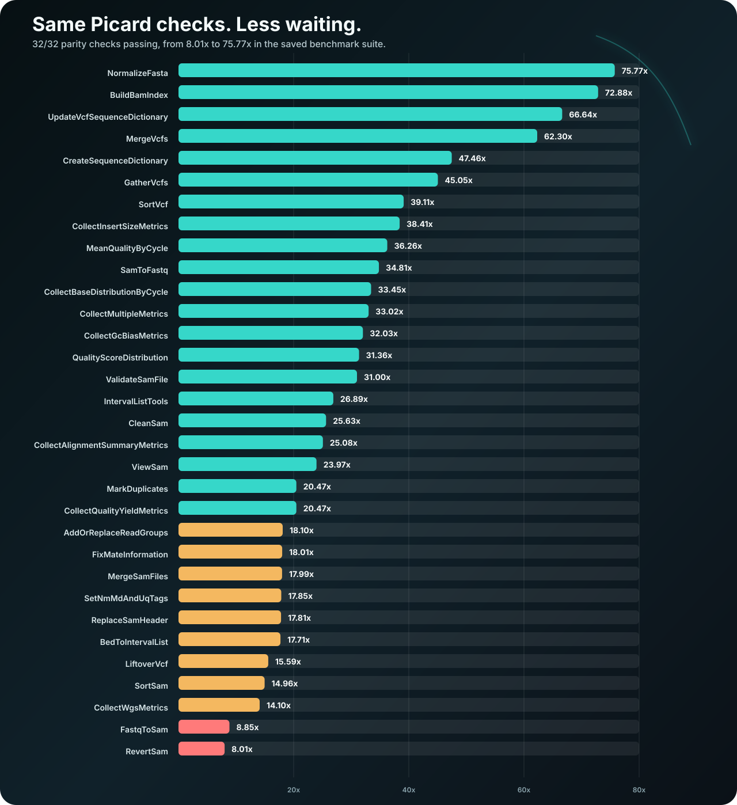

Familiar command shape
The optional shim installs a picard command for existing workflow
managers. Native commands accept Picard-style KEY=VALUE arguments and
common aliases.
A Rust implementation of selected Picard commands that tend to cost real time in sequencing workflows. Keep the arguments your pipelines already know, compare each command against Picard, and change only the parts you have checked.
The chart is rendered from the saved suite output in this repository. Each benchmark
compares turbo-picard against Picard and reports speed only after the stable output
comparison passes.
The current asset was saved on 2026-05-31 from
python3 tools/bench_suite.py --repeats 1 --skip-build; the raw log is
docs/site/assets/bench-suite-output.txt.
There are no benchmark exceptions right now: every native or partly native command
in the command matrix has a public speedup claim. Chart-producing commands compare
metrics text; the PDF plots are sidecars, not a pixel-for-pixel Picard claim.

turbo-picard keeps Picard-style command lines familiar. Unsupported commands are not guessed; they fail clearly or run through upstream Picard when fallback is configured.
The optional shim installs a picard command for existing workflow
managers. Native commands accept Picard-style KEY=VALUE arguments and
common aliases.
Command-specific scripts compare turbo-picard output against Picard for stable records, metrics, sidecars, sort orders, and failure behavior.
A separate comparator runs Picard and turbo-picard on public or lab BAMs, then writes JSON, Markdown, and a manifest entry with input SHA-256, versions, stable digests, artifact paths, citation fields, and wall times.
Unsupported commands can delegate to upstream Picard. Native I/O and malformed native inputs still fail directly, so real errors remain visible.
Synthetic cases are useful, but they are not enough for a tool people might place in
front of large biological studies. The checked-in public runs use fixtures from
HTSlib, Picard itself, and GATK's NA12878 mitochondrial test data. Each input is
pinned to a source commit and verified by SHA-256, so the saved parity evidence can
be rerun and audited instead of taken on trust. GitHub-hosted public inputs must use
a /blob/<commit>/ URL and the full 40-character Git commit SHA, not a
branch name or short hash.
For a scientific release, this is release evidence, not proof for every dataset a
lab might process; the 12-command release set still needs enough pinned input data
that one tiny fixture cannot carry the claim.
https://github.com/samtools/htslib/blob/5cded8325aca2f84f6c18641664893b900638086/test/range.bam
Commit 5cded8325aca2f84f6c18641664893b900638086; local SHA-256 e15d14e3994027d433431c960bf1c5f2d6939f26b5094cd5a86bc6229a5b2661.
ViewSam, CleanSam, CollectQualityYieldMetrics, CollectAlignmentSummaryMetrics, MarkDuplicates
All five pass against Picard 3.4.0 in benchmarks/real-data/htslib-range/evidence/real-data-comparison.md. Scope caveat: small public fixture.
https://github.com/broadinstitute/picard/blob/fc0b08410d38a10afd08e467dab74bf5e2e71310/testdata/picard/sam/test.bam
Commit fc0b08410d38a10afd08e467dab74bf5e2e71310; local SHA-256 1d499e5683479b88fad373b2de8b49f85cceae68a316e06b3cfdf60491fd7990.
ViewSam, CleanSam, CollectQualityYieldMetrics, CollectAlignmentSummaryMetrics, MarkDuplicates
All five pass against Picard 3.4.0 in benchmarks/real-data/picard-test-bam/evidence/real-data-comparison.md. Note: this public Picard test BAM is below the default release input-size threshold.
https://github.com/broadinstitute/gatk/blob/e8c49f600b06c658e0fa9bf67256340ebb46bc48/src/test/resources/org/broadinstitute/hellbender/tools/mutect/mito/NA12878.bam
Commit e8c49f600b06c658e0fa9bf67256340ebb46bc48; local SHA-256 70ea2e429805a75ce6007a32ba176ea7c697a398e0c39a9d58aaaa30e1ed86c3.
ViewSam, CleanSam, CollectQualityYieldMetrics, CollectAlignmentSummaryMetrics, MarkDuplicates, AddOrReplaceReadGroups, BuildBamIndex, RevertSam, SortSam, SamToFastq, CollectInsertSizeMetrics, ValidateSamFile
All twelve pass against Picard 3.4.0 in benchmarks/real-data/gatk-na12878-mito/evidence/real-data-comparison.md. AddOrReplaceReadGroups compares normalized SAM records plus sorted @RG header fields; BuildBamIndex compares the exact BAI binary digest; RevertSam compares normalized reverted SAM records; SamToFastq compares first-end, second-end, and unpaired FASTQ outputs byte-for-byte; ValidateSamFile compares the summary histogram and non-zero exit code. Scope caveat: GATK public NA12878 mitochondrial test BAM. Release tier: release_candidate. Minimum input threshold: 1000000 bytes.
https://github.com/broadinstitute/picard/blob/fc0b08410d38a10afd08e467dab74bf5e2e71310/testdata/picard/sam/snvq_metrics_test.bam
Commit fc0b08410d38a10afd08e467dab74bf5e2e71310; local SHA-256 be0daa7cb8e9ce11f2f68ac3db8c229d530736aaf7b80df3669fdb00779c06b3.
ViewSam, CleanSam, CollectQualityYieldMetrics, CollectAlignmentSummaryMetrics, MarkDuplicates
All five pass against Picard 3.4.0 in benchmarks/real-data/picard-snvq/evidence/real-data-comparison.md. Scope caveat: Picard public SNVQ metrics test BAM. Release tier: release_candidate. Minimum input threshold: 1000000 bytes.
python3 tools/verify_real_data_evidence.py
Reads benchmarks/real-data/manifest.json and fails if any listed source URL, commit, input hash, command list, README summary, or site copy drifts from the saved evidence.
python3 tools/verify_real_data_evidence.py --release-ready
Requires pinned release evidence with minimum input-size coverage, the 12-command release set, and matching README and site citations.
cargo install --locked --path crates/turbo-picard-cli --bin turbo-picard --bin picard export TURBO_PICARD_FALLBACK_COMMAND='mamba run -p /opt/conda/envs/picard picard' picard SortSam I=input.bam O=coordinate.bam SORT_ORDER=coordinate picard RevertSam I=aligned.bam O=unmapped.bam picard SetNmMdAndUqTags I=coordinate.bam O=tagged.bam R=reference.fa
MarkDuplicates, SortSam, RevertSam, SetNmMdAndUqTags, and metrics collectors are covered by dedicated benchmark scripts.
Install the non-shadowing command first, then add the shim and fallback once native coverage matches your workflow.
Save the suite output, then rebuild the graph and benchmark-data.json summary from that exact log.
Run compare_real_data.py on GIAB, 1000 Genomes, or workflow-representative shards and keep the JSON/Markdown evidence with the input SHA-256.
Speed claims are only useful when the evidence is easy to inspect: command coverage, parity checks, benchmark logs, real-data comparisons, and the public files built from them.
python3 tools/verify_command_matrix.py
Confirms native, partial, unsupported, and fallback behavior stays documented.
./tools/verify_basic_<command>_parity.sh
Compares stable outputs and sidecars for the commands your workflow uses.
printf 'benchmark_date=%s source=python3 tools/bench_suite.py --repeats 1 --skip-build\n' "$(date +%F)" > docs/site/assets/bench-suite-output.txt && python3 tools/bench_suite.py --repeats 1 --skip-build | tee -a docs/site/assets/bench-suite-output.txt
Regenerates speedup evidence while preserving the dated raw parity-checked suite log.
python3 tools/verify_benchmark_suite_coverage.py
Requires every native or partly native command to have a public benchmark or a documented exception.
python3 tools/verify_benchmark_thresholds.py
Requires the saved public benchmark set to keep full parity, at least 5.00x floor speedup, at least 20.00x geometric mean speedup, and at least 50.00x top speedup before those numbers are used as release evidence.
python3 tools/compare_real_data.py --input-bam /data/representative.bam --input-source-url <https-source-containing-accession-or-commit> --input-source-commit <accession-or-commit> --output-dir benchmarks/real-data/run-001/evidence --dataset-id run-001 --release-tier release_candidate
Compares Picard and turbo-picard on public or workflow-representative BAMs and writes reviewable JSON/Markdown plus a manifest entry with input identity, citation, versions, digests, and artifact paths.
python3 tools/update_real_data_manifest.py --entry benchmarks/real-data/run-001/evidence/manifest-entry.json
Adds the reviewed entry to the checked manifest and refuses duplicate dataset IDs unless replacement of the entry is explicit.
python3 tools/verify_real_data_evidence.py
Locks the checked-in public evidence to its pinned source URL, full 40-character Git commit SHA for GitHub fixtures, input SHA-256, command list, README summary, and site copy.
python3 tools/verify_real_data_evidence.py --release-ready
Requires pinned release evidence covering AddOrReplaceReadGroups, BuildBamIndex, CleanSam, CollectAlignmentSummaryMetrics, CollectInsertSizeMetrics, CollectQualityYieldMetrics, MarkDuplicates, RevertSam, SamToFastq, SortSam, ValidateSamFile, and ViewSam. Treat this as a packaging and release check, not proof for every dataset a lab might process.
python3 tools/render_benchmark_assets.py --suite-output docs/site/assets/bench-suite-output.txt
Rebuilds the static graph and JSON from the saved suite output.
python3 tools/verify_benchmark_log_evidence.py
Fails when benchmark-data.json no longer matches the dated raw suite log.
turbo-picard is designed for pipeline owners who need speed without accepting mystery behavior. Start by running turbo-picard beside Picard, compare stable output, then let fallback handle commands that are not native yet.
turbo-picard is not a full Picard suite yet. Supported commands are documented one by one, and fallback is still part of the product for workflows that need more.
Metrics text is the native parity target. Chart outputs are lightweight PDF summaries, so workflows that require Picard-equivalent rendered plots should use upstream Picard through fallback.
Release v0.1.0 has been submitted to Bioconda as
turbo-picard plus the optional
turbo-picard-picard-shim. The main package keeps the
turbo-picard command separate; the shim installs
picard only for users who want that command name.
Release checks include
python3 tools/bioconda_release_preflight.py and
bioconda-utils lint recipes config.yml --packages turbo-picard turbo-picard-picard-shim.
The main package keeps the turbo-picard command separate. The
optional shim owns picard and should be installed only when that
command-name shadowing is intended.
The software citation lives in CITATION.cff.
Cite the archived turbo-picard release you used, then cite benchmark and validation
inputs separately with immutable source URLs, commits or accessions, and input
SHA-256 hashes. That keeps the tool citation distinct from the evidence used to
justify a workflow switch.
Start with the commands already accelerated, keep upstream Picard as fallback, and switch only the commands where the evidence supports the change.